Vanderbilt · Anchor's Edge · ATD facilitator guide · print edition
The Better Question, the facilitator guide

Run of show
| Screen | Full (min) | Core (min) |
|---|---|---|
| Welcome / QR | 2 | 1 |
| The mission | 2 | 1 |
| The goal we are targeting | 2 | 1 |
| Objectives | 1 | 1 |
| Agenda | 1 | skip |
| Questions for your own path | 8 | 6 |
| Curiosity conversations | 10 | 7 |
| From curious to concrete | 9 | 6 |
| The core idea | 1 | skip |
| Recap quiz | 4 | 3 |
| Capstone commitment | 4 | 3 |
| Closing | 1 | 1 |
| Total | 45 | 30 |
The goal this month serves
Goal 1, Talent Marketplace & Transfer Portal.
Audience
All Vanderbilt staff in the Anchor's Edge weekly rhythm; nobody is assumed to manage anyone. Works for 6 to 40 on a call; breakouts run in pairs. No prerequisites; October is the opening month of the See the Talent Around You theme.
Room setup
Virtual, instructor led: camera on, deck link in chat, breakouts of 2 available. Learners follow on their own screens via the welcome-slide link or QR. Nothing typed into the deck is saved or sent.
Materials
- Meeting platform with screen share and breakout rooms; deck link ready to paste in chat
- Facilitator machine with the facilitator edition open; notifications off
- Learners on their own devices with the learner link
- Chat open for share-outs; the capstone copy button pastes there cleanly
A week before
- Run the learner edition start to finish and do every interaction honestly; you will demo at least one live.
- Read this month's theme page on the Anchor's Edge dashboard so the goal tie-in is fluent.
- Send the invite with the learner link and one line on what to bring.
The day before
- Test screen share with the facilitator edition; confirm the notes rail is readable.
- Open the learner link on a second device; the QR must land there.
- Run the section interactions once so you can drive them without reading.
30 minutes before
- Welcome slide up as people join; link pasted in chat.
- Close every other tab; silence the machine.
- Breakout rooms pre-configured in pairs.
When things go sideways
If Screen share or the site fails mid-session: Paste the learner link in chat and narrate from your own browser; every interaction runs on learner devices without the share.
If Breakout rooms are unavailable: Run the breakout prompts as 60-second chat storms: everyone types their answer at once, you read the best three aloud.
If A breakout pair drifts from curiosity questions into venting about their own roles: Redirect warmly: one better question about your path counts as the exercise. Park the venting with the offer of a different forum for it.
If Someone says asking colleagues about their work feels intrusive or fake: Offer the opener live: 'I am trying to understand how work happens outside my corner; can I ask you about yours?' Fifteen minutes, their terms. Almost nobody says no to being asked well.
Tough questions, ready answers
Q: Isn't this just networking with a nicer name?
Networking optimizes for contacts; curiosity conversations optimize for understanding. You ask about the work on its own terms with nothing attached. The career payoff is real, and it arrives as a side effect of paying genuine attention, which is exactly why it works.
Q: What if my curiosity points somewhere my manager would rather I not look?
Curiosity is not a transfer request. An hour of shadowing commits you to nothing, and this month's manager sessions ask managers to make exactly this kind of exploration normal. If it grows into a real move, the Talent Marketplace and the Transfer Portal exist so that it becomes a Vanderbilt move instead of an exit.
Q: I asked a better question and got a shallow answer. Now what?
One shallow answer is data about the moment, not the method. Follow up once with the invisible-work question, which almost always deepens things. If it stays shallow, aim the same curiosity at a different person; the skill is the asking, and it compounds.
Copy-paste templates
Pre-work invite (paste into the calendar invite)
Subject: Thursday, 45 minutes on curiosity as a career skill. Bring nothing but one role at Vanderbilt you have quietly wondered about. Live and interactive; have the session link open on your own screen.
7-day pulse (send one week after)
Subject: Did you ask? Three lines, reply whenever: 1) Did the curiosity move on your card happen? 2) What did asking show you that waiting would not have? 3) What is your next question?
After the session
Seven days out, send the pulse: 'Did the curiosity move on your card happen? What did asking show you that waiting would not have? What is your next question?' Count of completed moves feeds the month's Goal 1 story.
Welcome / QR Full 2 min · Core 1
Get everyone into the deck on their own screen and set the tone: 45 minutes, live, hands on.
Say
“Welcome to Thrive Thursday. Scan the code or click the link in chat so this session runs on your screen too. Forty-five minutes, one focus: Softskill · Curiosity: asking better career questions.”
Do
- Slide up as people join; link pasted in chat every few minutes.
- State the norm once: type into your own screen, nothing you enter is saved or sent.
Watch for: People lurking without the deck open. The interactions only land if the deck is on their screen.
Transition: “Before the topic, thirty seconds on why Vanderbilt is asking for this hour.”
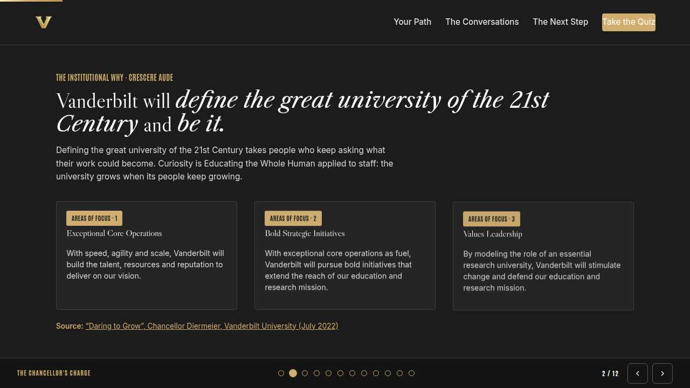
The mission Full 2 min · Core 1
Anchor the session in the Chancellor's charge so the next 40 minutes read as mission work, not admin.
Say
“This year of learning hangs off one sentence from the Chancellor: Vanderbilt will define the great university of the 21st Century and be it. Defining the great university of the 21st Century takes people who keep asking what their work could become. Curiosity is Educating the Whole Human applied to staff: the university grows when its people keep growing.”
Do
- Read the mission line slowly, once.
- Point at the tie-in line and let it sit; no discussion needed here.
Transition: “That is the why. Here is the number we are moving.”
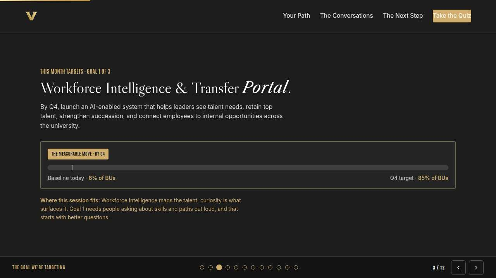
The goal we are targeting Full 2 min · Core 1
Name the enterprise goal this month serves.
Say
“Every month of Anchor's Edge lands on one of three enterprise goals. This month is Goal 1, Talent Marketplace & Transfer Portal: Launch the Talent Marketplace and the Transfer Portal: helping leaders see talent needs, retain top talent, strengthen succession, and connecting employees to internal opportunities across the university. The Talent Marketplace maps the talent; curiosity is what surfaces it. Goal 1 needs people asking about skills and paths out loud, and that starts with better questions.”
Do
- Read the goal once, plainly.
- One line, not a lecture: this session is one of the moves that serves it.
Transition: “Here is what you will be able to do in 45 minutes.”
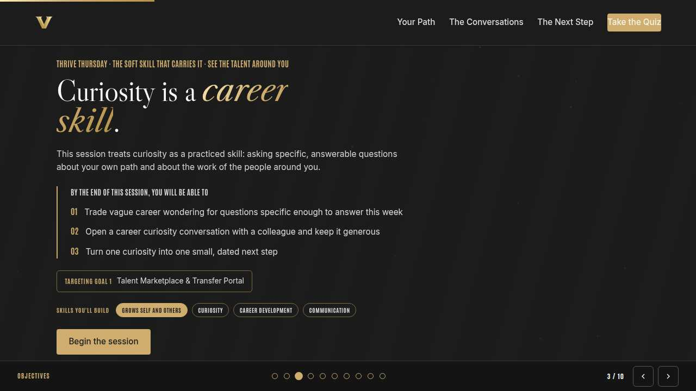
Objectives Full 1 min · Core 1
Set the contract for the session in under a minute.
Say
“By the end of this session: trade vague career wondering for questions specific enough to answer this week; open a career curiosity conversation with a colleague and keep it generous; turn one curiosity into one small, dated next step. That is the whole contract.”
Do
- Read the three objectives briskly; do not elaborate yet.
Transition: “Three stops to get there.”
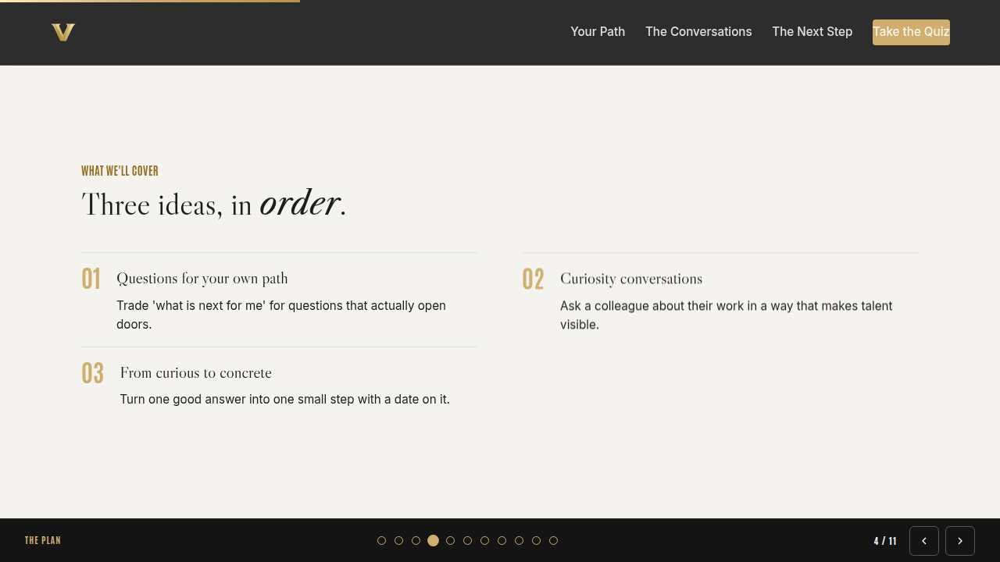
Agenda Full 1 min · Core skip
Show the path so the room can pace itself.
Say
“Three stops: questions for your own path, curiosity conversations, from curious to concrete. Each one has something to play with, so keep the deck open.”
Do
- Point once at each stop; ten seconds each.
Transition: “Stop one.”
Core path: Core: skip the read-through, gesture at the slide in passing.
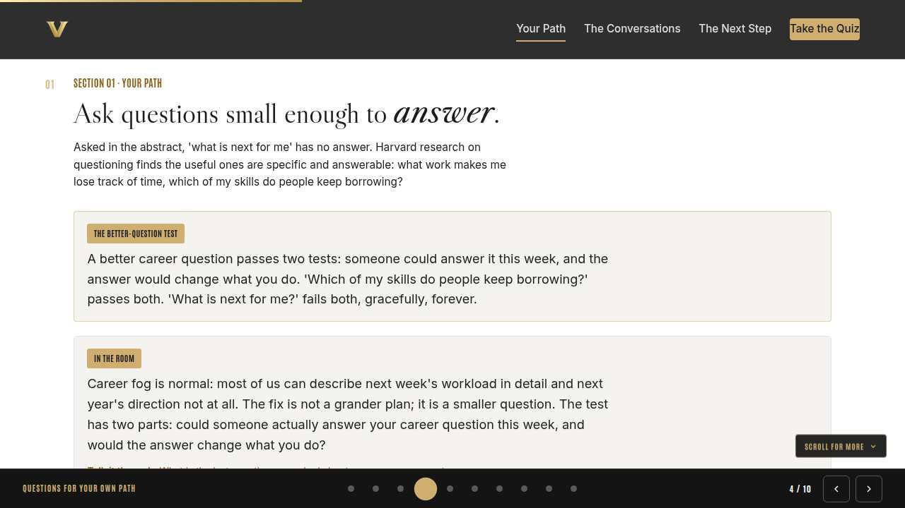
Questions for your own path Full 8 min · Core 6
Replace vague career wondering with specific, answerable questions about the learner's own skills and path.
Say
“We treat curiosity like a personality trait: some people have it, some don't. Today we treat it as a skill, and skills start with technique. The technique is the better question: specific enough that someone could answer it this week, honest enough that the answer would change what you do. We start by aiming it at your own career.”
Do
- Put the In the room card on screen and read it aloud; let the two-part test land for a beat.
- Run the discussion prompt and take two or three voices; this is a conversation, not a quiz. The knowledge check lives in the self-paced edition only. Ask who has caught themselves asking the five-year question.
- Run the breakout: the task that makes time move fastest, 90 seconds each way.
Ask
“Honestly, what is the last question you asked about your own career?”
Expect:
- Am I doing okay
- What is next for me
- Often silence: no question at all
Respond: All normal. The silence is the finding: most of us go months without asking our career a single answerable question. Today fixes the question first, then the habit.
Debrief: A better question is answerable this week and changes what you do. Everything else is fog.
Watch for: People turning the prompt into self-criticism. Keep it at curiosity about skills, never a verdict on progress.
Transition: “Curiosity aimed inward is half the skill. Now aim it at the talent around you.”
Core path: Core: skip the breakout; ask for the time-flies task in chat instead.
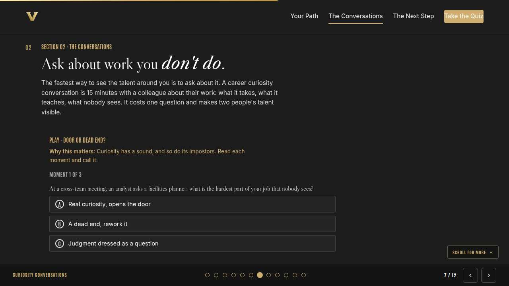
Curiosity conversations Full 10 min · Core 7
Equip learners to open generous career curiosity conversations and to hear the difference between curiosity, dead ends, and judgment.
Say
“This month is called See the Talent Around You, and here is the mechanism: talent becomes visible when somebody asks about it. A career curiosity conversation is fifteen minutes about a colleague's work on its own terms. No agenda and nothing to get: what does the work take, what does it teach, what does nobody see. Let's train your ear for what real curiosity sounds like.”
Do
- Run Door or dead end? live; everyone plays on their own screen.
- After round two, pause: ask who has been on the receiving end of a dead-end question and felt the difference.
- Run the breakout on the role they are quietly curious about.
Ask
“Why does 'what does nobody see about your work' open people up so reliably?”
Expect:
- Everyone has an invisible part of their job
- It signals respect for the real work
- Nobody ever asks it
Respond: All three. It hands someone the microphone for the part of their work that goes unthanked. You learn the truth of the role, they feel seen, and both halves serve this month's theme.
Debrief: Real curiosity is specific, generous, and about them. Dead ends fish for reassurance; judgment closes the doors it knocks on.
Watch for: People framing the conversation as networking for advantage. Keep it generous; the visibility payoff is mutual and arrives on its own.
Transition: “A good answer is the beginning, though. Stop three turns one into a step.”
Core path: Core: run the trainer, skip the breakout, take one voice on the debrief question.
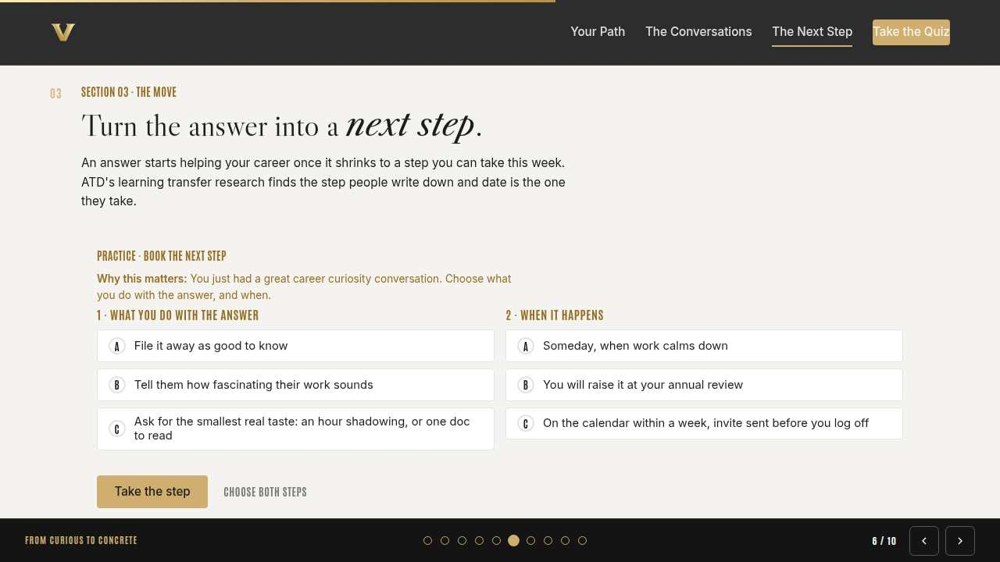
From curious to concrete Full 9 min · Core 6
Convert one curiosity into a small next step with a date on it.
Say
“Here is where curiosity usually dies: the conversation was great, the answer was fascinating, and nothing happened. The fix is embarrassingly small. Ask for the smallest real taste of the thing, and put a date on it before the feeling fades. An hour of shadowing books in one message. Let's build the step.”
Do
- Run Book the next step; give the room two minutes to make both choices and run it.
- Ask one volunteer to read their outcome aloud, weak or strong.
- Point at the pattern: smallest real taste, date before you log off.
Ask
“Why does 'someday, when work calms down' feel so reasonable and work so badly?”
Expect:
- Work never calms down
- The curiosity fades before the calendar clears
Respond: Both. Someday is a real decision disguised as a delay. The small dated step is how you outvote your own busyness.
Debrief: Small enough to get a yes, dated enough to be real. That is the whole conversion.
Watch for: People sizing the step too big, like requesting a formal rotation. Shrink it until the ask fits in one message.
Transition: “Quick recap, then you build your card.”
Core path: Core: everyone runs the builder solo; skip the read-aloud.
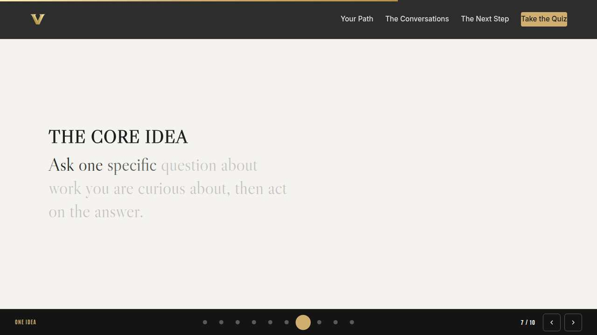
The core idea Full 1 min · Core skip
Land the one sentence the session exists to install.
Say
“If you keep one sentence from today, this is it. Read it once, out loud: Talent becomes visible the moment somebody asks about it.”
Do
- Pause two beats after reading; the word animation carries it.
Transition: “The recap makes it stick.”
Core path: Core: pass through in stride; the sentence reads itself.
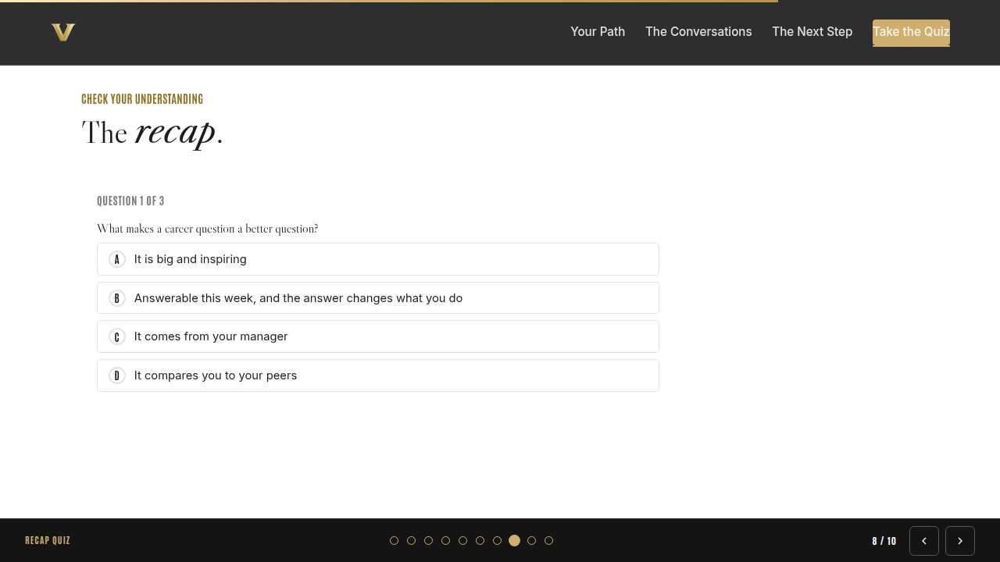
Recap quiz Full 4 min · Core 3
Score the learning while it is fresh; wrong answers are teaching moments, not failures.
Say
“Three questions, on your own screen. Answer honestly; the explanations are where the learning sticks.”
Do
- Give the room 90 seconds to run it individually.
- Ask for a show of results in chat: how many got 3 of 3?
- Read out the explanation for whichever question drew the most misses.
Watch for: Rushing past the why lines. The explanations carry the teaching.
Transition: “Now point it at your real week.”
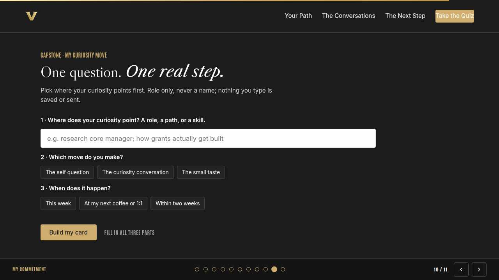
Capstone commitment Full 4 min · Core 3
Convert the session into one named, dated action per person.
Say
“Now make it real. One place your curiosity points, role only. Pick the move, pick the window, build the card, and copy it somewhere you will see it before Friday. Two minutes, quiet, go.”
Do
- Two quiet minutes; everyone builds their own card.
- Invite two or three volunteers to read their card aloud or paste it in chat.
- Remind: copy the card somewhere you will see it this week.
Watch for: Vague entries. Nudge for a name-able situation and a real date.
Transition: “Last slide.”
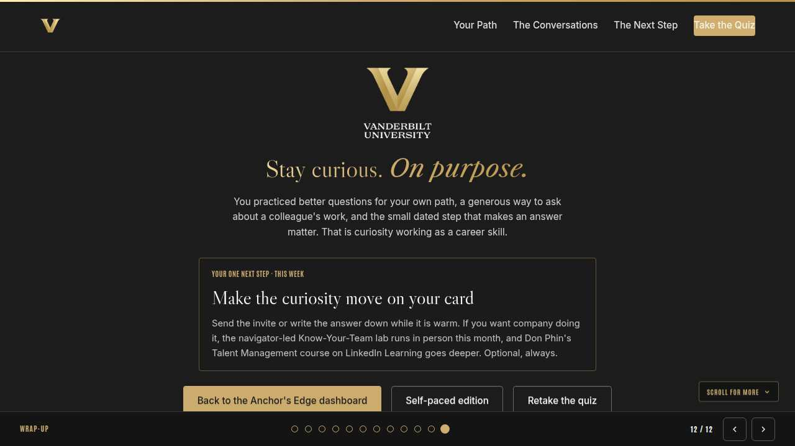
Closing Full 1 min · Core 1
End with the next step and where this thread continues.
Say
“That closes the first week of Anchor's Edge. Monday gave managers the talent read, Tuesday put your skills on the map, and today gave you the questions that make talent visible, yours and everyone else's. Make the curiosity move on your card this week; the Know-Your-Team lab with your navigator and the Talent Management course on LinkedIn Learning are there if you want to keep pulling the thread. The rhythm picks back up next Monday, and next month's theme, The Transfer Portal in Practice, turns this month's visibility into real internal moves. See you then.”
Do
- Point at the next-step card; one sentence.
- Name the rest of the week's rhythm: the other sessions echo this month's theme.
Generated from facilitator/notes.json. The on-screen facilitator edition lives at ./ alongside this guide.